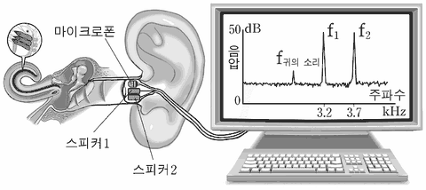

귀의 소리
지문을 먼저 읽고, 이해가 막히는 문단에서 ‘그림으로 보기’를 누르세요. 그림은 문단을 따라 바뀝니다.
1문단일반적인 청력 검사는 검사 받는 사람의 협조가 없으면 시행하기 힘들다. 이러한 문제에 대한 해결책의 하나로 ‘귀의 소리(otoacoustic emissions)’를 활용하는 기술이 있다. 이 기술은 1978년 데이비드 켐프에 의해 귀에서 소리를 방출한다는 놀라운 사실이 발견되면서 발달하였다.
2문단특정 소리에 귀를 기울인다는 의식적인 행동은 생리학적으로 내이(內耳)의 달팽이관 안에 있는 청세포의 역할로 설명할 수 있다. 포유동물의 청세포는 외부의 소리를 감지하는 역할을 하면서, 수축과 이완을 통해 특정 음파의 소리에 대한 민감도를 증가시키기도 한다. 이 과정에서 ‘귀의 소리’가 발생하는데 ㉠ 이는 청세포가 능동적으로 내는 소리이다. 과거에는 ‘귀의 소리’를 외부 소리에 대한 ‘달팽이관의 메아리’로 여겼다. 하지만 주어진 외부 자극 소리로 발생하는 메아리보다 음압이 더 큰 경우가 있기 때문에, ‘귀의 소리’를 단순한 메아리로 설명하기는 어렵다. 오른쪽 귀에만 외부 소리 자극을 가했는데 왼쪽 귀에서도 ‘귀의 소리’가 발생한다는 점 역시 마찬가지이다.
3문단이러한 ‘귀의 소리’는 청세포에서 발생하여 기저막을 따라 난원창으로, 다시 청소골을 통해 고막과 외이도로 전달된다. 이 소리는 두 종류의 외부 소리를 이용하여 청세포를 자극한 후 특정한 주파수 대역에서 측정할 수 있다. 소리 자극으로는 여러 주파수가 섞인 복합음이나 두 주파수(f1과 f2, f1 < f2)만으로 이루어진 조합음을 이용한다. 전자에서 발생하는 ‘귀의 소리’는 4 kHz 이하의 주파수 대역에서 측정되는데, 그 소리는 개인마다 차이를 보이지만 개인별로는 일정한 패턴을 유지한다. 후자에서 발생하는 ‘귀의 소리’는 수학적으로 계산되는 여러 주파수 대역에서 측정되며, 특정 주파수 대역(fx ＝ 2f1 － f2, x ＝ 최대 ‘귀의 소리’)에서 가장 크다.
4문단청세포는 작업장의 소음과 같은 특정 주파수나 약물 등에 반복 노출되면 손상될 수 있다. 청세포가 손상되기 시작하면, 청력 손실이 일어나고 ‘귀의 소리’도 감소한다. 청세포 손상이 진행되어 30 dB 이상의 청력 손실이 발생한 경우 ‘귀의 소리’도 사라진다.
5문단‘귀의 소리’는 조용한 환경에서 마이크로폰을 외이도에 장착하여 측정한다. ㉡ ‘귀의 소리’ 측정 기술을 활용하면 검사 받는 사람의 협조 없이도 청력을 객관적으로 측정할 수 있다. 이 기술은 몇몇 국가에서 신생아의 청력 이상을 조기에 발견하기 위한 선별 검사에 이용되고 있다.
<보기>는 두 주파수의 조합음을 이용하여 ‘귀의 소리’를 측정하는 장치를 그린 그림이다. 위 글을 바탕으로 <보기>를 이해한 내용으로 적절하지 않은 것은?
